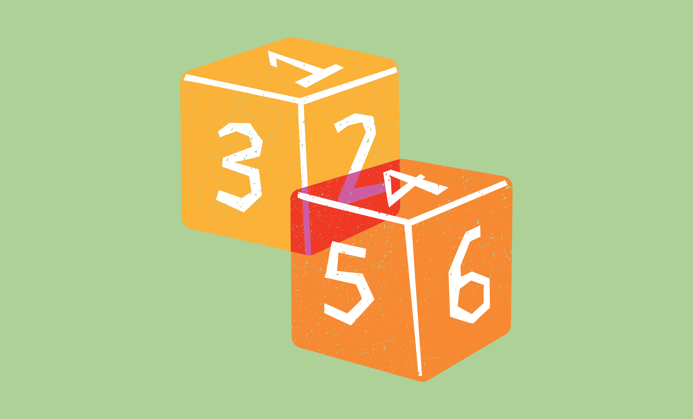

WHAT IS THE NUMBER SYSTEM?
Different number systems like binary, octal, decimal, and hexadecimal organize and govern how to use numerals in representing numbers.
| ▼ | On this Page |
|---|
| Date | 17 Oct. 2025 |
|---|
Numbers are mathematical concepts that are used to represent quantities in making calculations. They are used to count, measure, and label, among many other things that we see and use in everyday life (BYJU’s, n.d.).
These numbers are represented by numerals which can be in the form of a name, figure, or symbol (SplashLearn, n.d.).
I. Types of Numbers
Many numbers are used in our daily lives, which can be categorized as real numbers or complex numbers.
- Real Number – Numbers that can be plotted on a number line and include all rational numbers and irrational numbers.
- Complex Number – the combination of real and imaginary numbers (a+bi) (BYJU’S, n.d.).
| Real Numbers | Natural Numbers The positive numbers that are used for counting (1, 2, 3, 4, 5, …) |
|---|---|
| Whole Numbers All the positive numbers, including zero (0, 1, 2, 3, 5, …) |
|
| Integers The positive and negative numbers, including zero (-2, -1, 0, 1, 2, …) |
|
| Rational Numbers All numbers above and including all fractions (-1, 0, 0.5, 1, …) |
|
| Irrational Numbers A number that can not be expressed rationally (π or Φ) |
|
| Complex Numbers | Imaginary Numbers Numbers that are not real, like the square root of negative numbers, do not have a defined value. |
II. Types of Number Systems
Number systems are systems in place for naming and representing numbers using a set of symbols. These systems are defined by their base, which determines the number of unique digits they use. (BJYU’S, n.d.; Cuemath, n.d.)
Many types of number systems exist; however, only four are conventionally used. (GeeksforGeeks, 2025; Cuemath, n.d.)
| Binary | Octal | Decimal | Hexadecimal |
|---|---|---|---|
| Base 2 Only numbers 0 & 1 |
Base 8 From numbers 0 to 7 |
Base 10 From numbers 0 to 9 |
Base 16 From numbers 0 to 9 and letters A to F |
| The foundation of digital systems that we use today. | Mainly used in early digital systems, it simplified binary strings and reduced | The standard number system that we use for everyday calculations. | This system is used in computers to compress or simplify the lengthy binary strings. |
III. Analysis
Numbers are everywhere in our lives; they represent the counting and calculations we perform—from counting the apples we eat to solving basic arithmetic problems. They are undoubtedly among the most fundamental concepts a person must learn and master, for without them, navigating daily life would be difficult. In representing numbers, we follow a standard, a universal system that can be understood almost anywhere in the world. Even with different languages, we can still communicate through numbers. Thus, understanding the various types of numbers that exist is important to knowing how we can use them to our advantage.
In today’s digital world, numbers form the very foundation that allows it to exist and function. They enable us to open software, play games, and communicate with friends across the globe. All of these are made possible through number systems, which are the conventional rules that define how numbers can represent different forms. Among these, the binary number system is the most essential in the digital realm, as it reflects real-world states of on and off, represented by 1 and 0.
This system is important because it allows computers to store information in a long-term, physical form. Unlike other number systems, a computer cannot directly interpret a number like 3, as it cannot be expressed through a tangible on-or-off state. However, with the vast amount of data processed each day, computers must handle lengthy binary strings to store and manage information effectively, strings that humans may find difficult to interpret. With the help of other number systems, binary can be converted into octal, decimal, or hexadecimal forms, making data easier for humans to read and helping to shorten long binary sequences.
Numbers may seem overwhelming once we look beyond the natural numbers we learned as children. However, when we overcome that feeling, we begin to see their beauty and understand how these symbols and figures come together to form systems that shape and sustain our societies today.
| Reference |
|---|
- BYJU’S. (n.d.). Imaginary numbers. BYJU’S. https://byjus.com/maths/imaginary-numbers/
- BYJU’S. (n.d.). Numbers. BYJU’S. https://byjus.com/maths/numbers/
- BYJU’S. (n.d.). Number system. BYJU’S. https://byjus.com/maths/number-system/
- Cuemath. (n.d.). Types of number systems. https://www.cuemath.com/numbers/number-systems/
- GeeksforGeeks. (2025). Base conversions for number system. https://www.geeksforgeeks.org/digital-logic/number-system-and-base-conversions/
- Huggins, S. (2023). Classification of numbers. Study.com. https://study.com/academy/lesson/classification-of-numbers.html
- SplashLearn. (n.d.). Numerals – Definition, numeral systems, facts, examples. https://www.splashlearn.com/math-vocabulary/number-sense/numeral
Thank you for your curiosity.